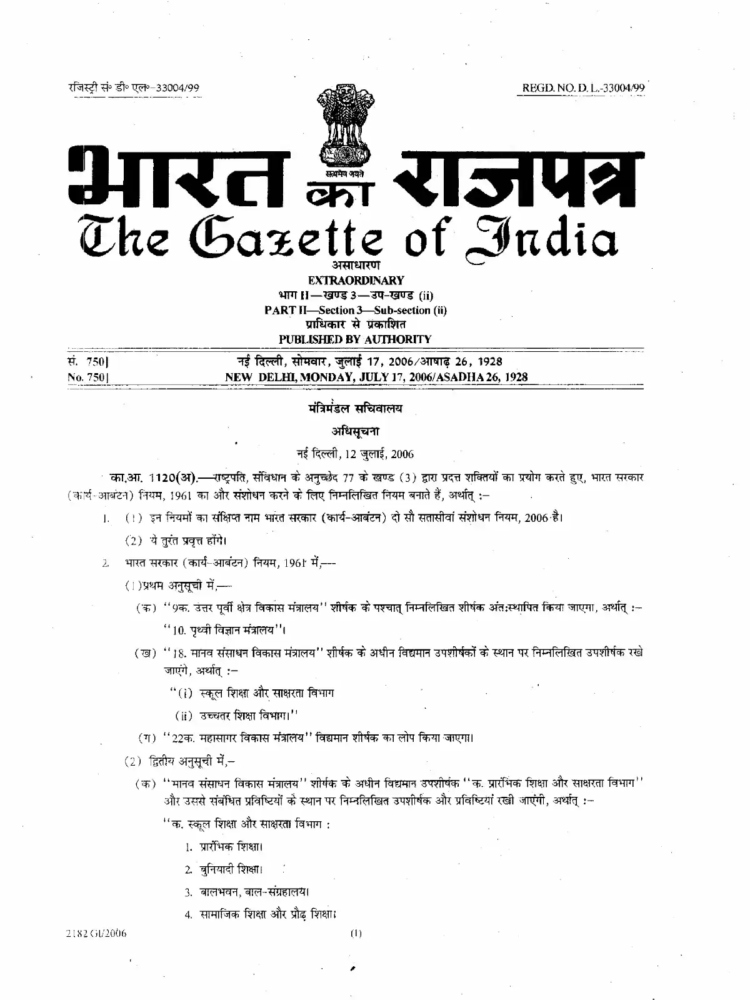
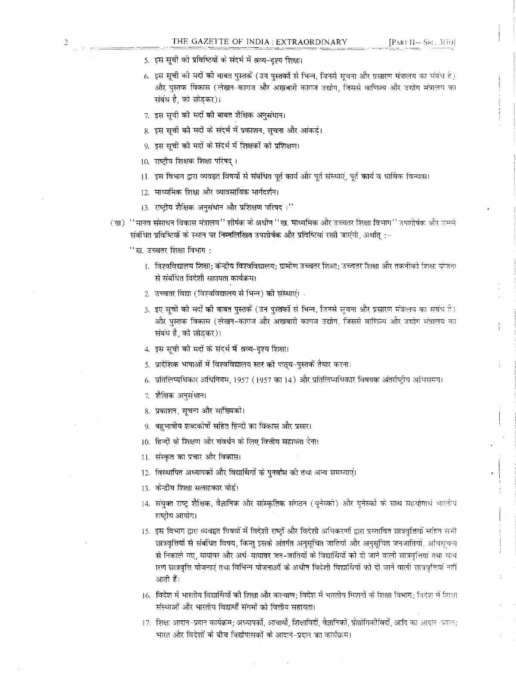
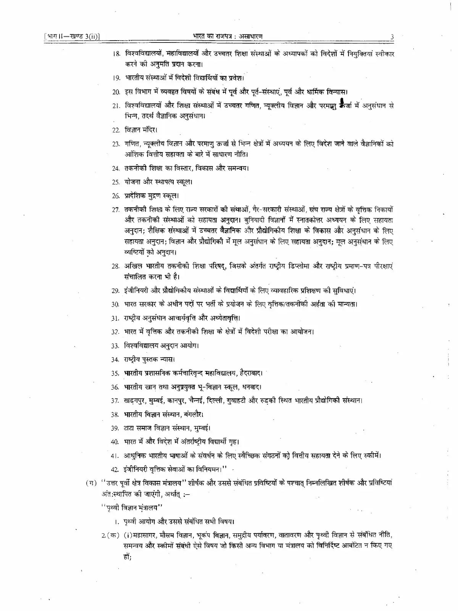
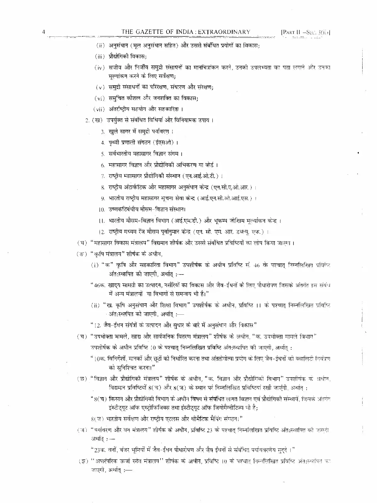
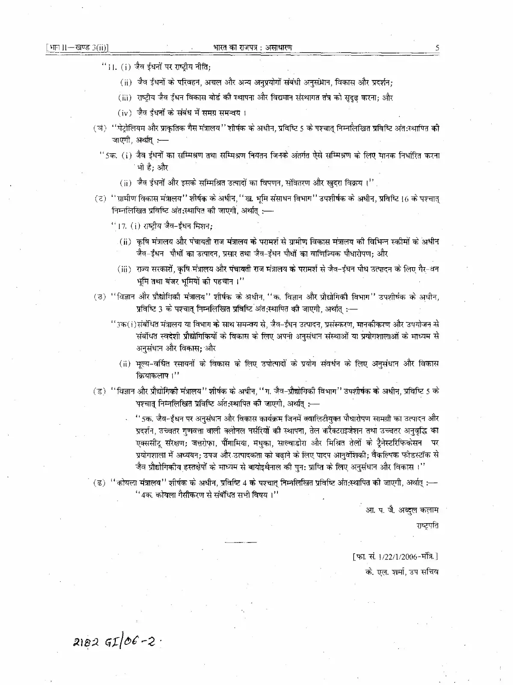
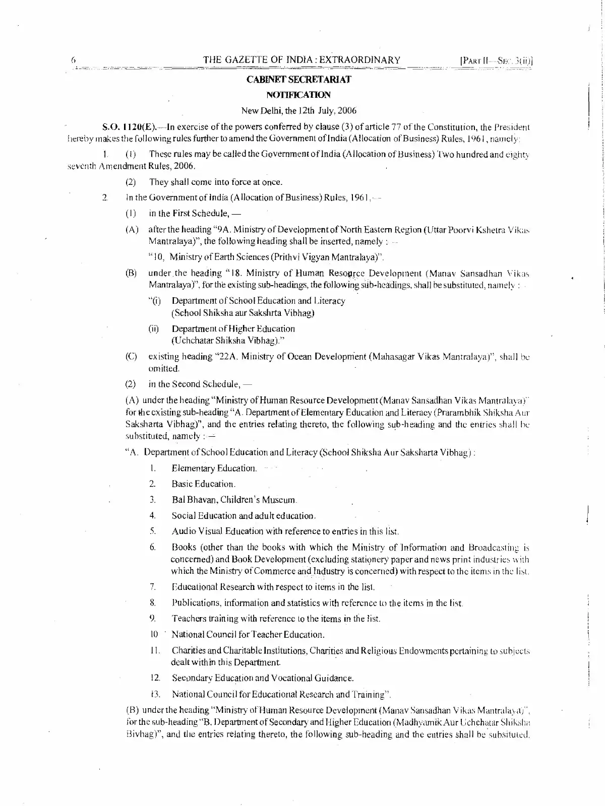
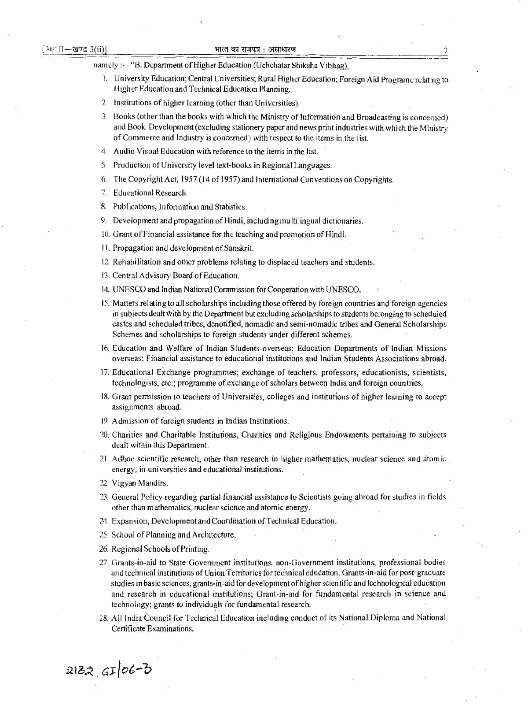
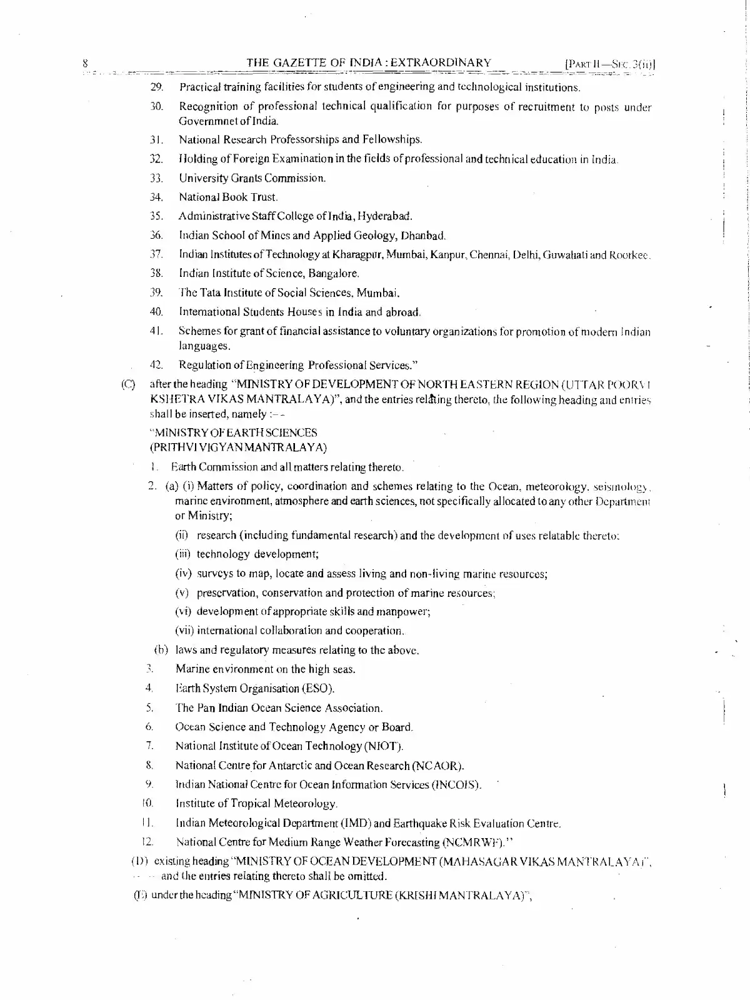
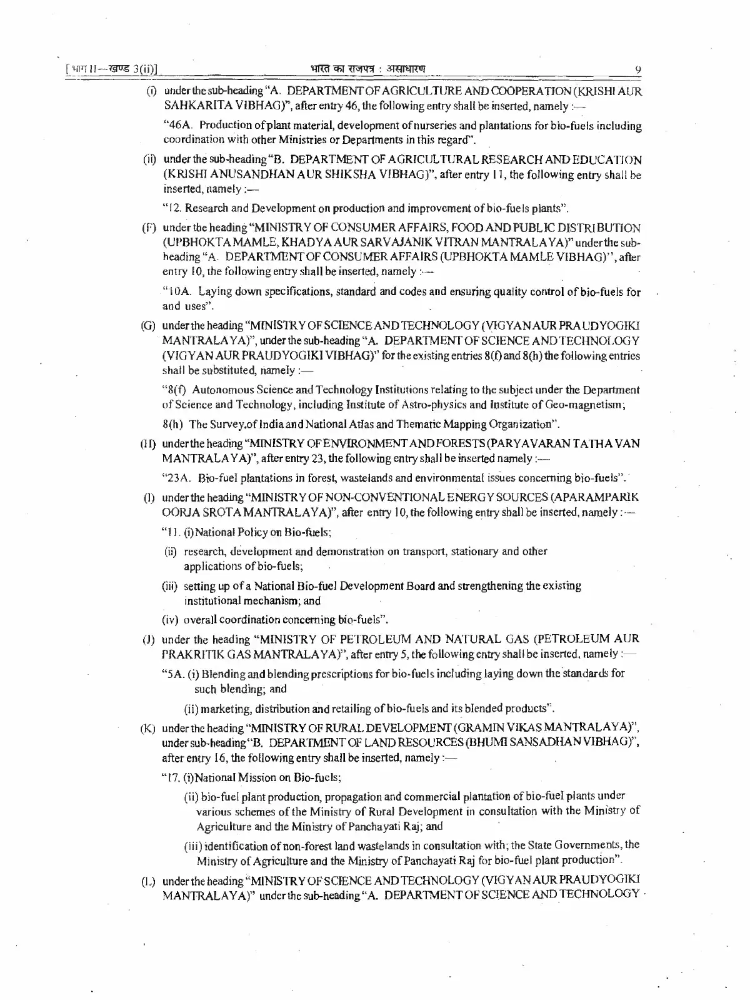
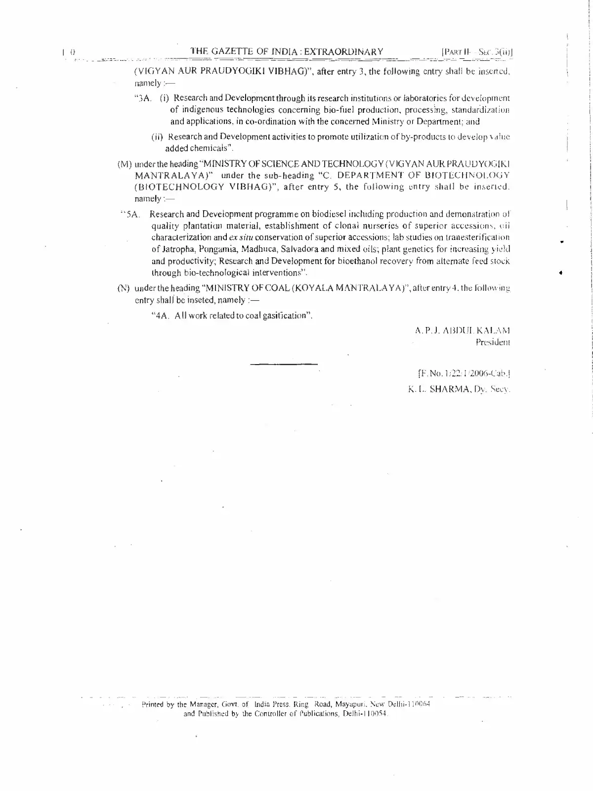

Amendment #287 (S.O. 1120(E), 2006)
18 changes: 3 to the First Schedule, 15 to the Second Schedule. 18 applied
What it did to the ministries
- renamedMinistry of Ocean Development is renamed Ministry of Earth Sciences change 1, 3, 6, 13 · histories: Earth Sciences
The order, page by page
Page 1 of 10

Page 2 of 10

Page 3 of 10

Page 4 of 10

Page 5 of 10

Page 6 of 10

12345after Schedule 1 › Ministry of Development of North Eastern Region
- 10. Ministry of Earth Sciences
applied at schedule 1 › ministry 10 in the Rules after #287
Schedule 1 › Ministry of Human Resource Development
- i. Department of School Education and Literacy
- ii. Department of Higher Education
applied at schedule 1 › ministry 18 in the Rules after #287
Schedule 1 › Ministry of Ocean Development
applied at schedule 1 › ministry 22A in the Rules after #287
Schedule 2 › Ministry of Human Resource Development › Department of Elementary Education and Literacy
- A. Department of School Education and Literacy
- 1. Elementary Education.
- 2. Basic Education.
- 3. Bal Bhavan, Children's Museum.
- 4. Social Education and adult education.
- 5. Audio Visual Education with reference to entries in this list.
and 8 more
- 6. Books (other than the books with which the Ministry of Information and Broadcasting is concerned) and Book Development (excluding stationery paper and news print industries with which the Ministry of Commerce and Industry is concerned) with respect to the items in the list.
- 7. Educational Research with respect to items in the list.
- 8. Publications, information and statistics with reference to the items in the list.
- 9. Teachers training with reference to the items in the list.
- 10. National Council for Teacher Education.
- 11. Charities and Charitable Institutions, Charities and Religious Endowments pertaining to subjects dealt within this Department.
- 12. Secondary Education and Vocational Guidance.
- 13. National Council for Educational Research and Training
applied at schedule 2 › ministry MINISTRY OF HUMAN RESOURCE DEVELOPMENT › department A in the Rules after #287
Schedule 2 › Ministry of Human Resource Development › Department of Secondary and Higher Education
- B. Department of Higher Education
- 1. University Education; Central Universities; Rural Higher Education; Foreign Aid Programe relating to Higher Education and Technical Education Planning.
- 2. Institutions of higher learning (other than Universities).
- 3. Books (other than the books with which the Ministry of Information and Broadcasting is concerned) and Book Development (excluding stationery paper and news print industries with which the Ministry of Commerce and Industry is concerned) with respect to the items in the list.
- 4. Audio Visual Education with reference to the items in the list.
- 5. Production of University level text-books in Regional Languages.
and 38 more
- 6. The Copyright Act, 1957 (14 of 1957) and International Conventions on Copyrights.
- 7. Educational Research.
- 8. Publications, Information and Statistics.
- 9. Development and propagation of Hindi, including multilingual dictionaries.
- 10. Grant of Financial assistance for the teaching and promotion of Hindi.
- 11. Propagation and development of Sanskrit.
- 12. Rehabilitation and other problems relating to displaced teachers and students.
- 13. Central Advisory Board of Education.
- 14. UNESCO and Indian National Commission for Cooperation with UNESCO.
- 15. Matters relating to all scholarships including those offered by foreign countries and foreign agencies in subjects dealt with by the Department but excluding scholarships to students belonging to scheduled castes and scheduled tribes, denotified, nomadic and semi-nomadic tribes and General…
- 16. Education and Welfare of Indian Students overseas; Education Departments of Indian Missions overseas; Financial assistance to educational institutions and Indian Students Associations abroad.
- 17. Educational Exchange programmes; exchange of teachers, professors, educationists, scientists technologists, etc.; programme of exchange of scholars between India and foreign countries.
- 18. Grant permission to teachers of Universities, colleges and institutions of higher learning to accept. assignments abroad.
- 19. Admission of foreign students in Indian Institutions.
- 20. Charities and Charitable Institutions, Charities and Religious Endowments pertaining to subjects dealt within this Department.
- 21. Adhoc scientific research, other than research in higher mathematics, nuclear science and atomic energy, in universities and educational institutions.
- 22. Vigyan Mandirs.
- 23. General Policy regarding partial financial assistance to Scientists going abroad for studies in fields other than mathematics, nuclear science and atomic energy.
- 24. Expansion, Development and Coordination of Technical Education.
- 25. School of Planning and Architecture.
- 26. Regional Schools of Printing.
- 27. Grants-in-aid to State Government institutions, non-Government institutions, professional bodies and technical institutions of Union Territories for technical education. Grants-in-aid for post-graduate studies in basic sciences, grants-in-aid for development of higher scientific and technological…
- 28. All India Council for Technical Education including conduct of its National Diploma and National Certificate Examinations.
- 2182. GI06-3
- 29. Practical training facilities for students of engineering and technological institutions.
- 30. Recognition of professional technical qualification for purposes of recruitment to posts under Governmnet of India.
- 31. National Research Professorships and Fellowships.
- 32. Holding of Foreign Examination in the fields of professional and technical education in India.
- 33. University Grants Commission.
- 34. National Book Trust.
- 35. Administrative Staff College of India, Hyderabad.
- 36. Indian School of Mines and Applied Geology, Dhanbad.
- 37. Indian Institutes of Technology at Kharagpur, Mumbai, Kanpur, Chennai, Delhi, Guwahati and Roorkee
- 38. Indian Institute of Science, Bangalore.
- 39. The Tata Institute of Social Sciences, Mumbai
- 40. International Students Houses in India and abroad.
- 41. Schemes for grant of financial assistance to voluntary organizations for promotion of modern Indian languages.
- 42. Regulation of Engineering Professional Services.
applied at schedule 2 › ministry MINISTRY OF HUMAN RESOURCE DEVELOPMENT › department B in the Rules after #287
read page break
Page 7 of 10

Page 8 of 10

67after Schedule 2 › MINISTRY OF DEVELOPMENT OF NORTH EASTERN REGION
- MINISTRY OF EARTH SCIENCES
- 1. Earth Commission and all matters relating thereto.
- 2.
- a. (i) Matters of policy, coordination and schemes relating to the Ocean, meteorology, seismology. marine environment, atmosphere and earth sciences, not specifically allocated to any other Department or Ministry
- ii. research (including fundamental research) and the development of uses relatable thereto:
- ii. technology development
and 15 more
- iv. surveys to map, locate and assess living and non-living marine resources
- v. preservation, conservation and protection of marine resources
- vi. development of appropriate skills and manpower
- vii. international collaboration and cooperation.
- b. laws and regulatory measures relating to the above.
- 3. Marine environment on the high seas.
- 4. Earth System Organisation (ESO).
- 5. The Pan Indian Ocean Science Association.
- 6. Ocean Science and Technology Agency or Board.
- 7. National Institute of Ocean Technology (NIOT).
- 8. National Centre for Antarctic and Ocean Research (NCAOR).
- 9. Indian National Centre for Ocean Information Services (INCOIS). }
- 10. Institute of Tropical Meteorology.
- 11. Indian Meteorological Department (IMD) and Earthquake Risk Evaluation Centre.
- 12. National Centre for Medium Range Weather Forecasting (NCMRWF).
applied at schedule 2 › ministry MINISTRY OF EARTH SCIENCES in the Rules after #287
Schedule 2 › MINISTRY OF OCEAN DEVELOPMENT
applied at schedule 2 › ministry in the Rules after #287
Page 9 of 10

8910111213141516after Schedule 2 › MINISTRY OF AGRICULTURE › DEPARTMENT OF AGRICULTURE AND COOPERATION › entry 46
- 46A. Production of plant material, development of nurseries and plantations for bio-fuels including coordination with other Ministries or Departments in this regard
applied at schedule 2 › ministry MINISTRY OF AGRICULTURE › department A › part IV › entry 46A in the Rules after #287
after Schedule 2 › MINISTRY OF AGRICULTURE › DEPARTMENT OF AGRICULTURAL RESEARCH AND EDUCATION › entry 11
- 12. Research and Development on production and improvement of bio-fuels plants
applied at schedule 2 › ministry MINISTRY OF AGRICULTURE › department B › part III › entry 12 in the Rules after #287
after Schedule 2 › MINISTRY OF CONSUMER AFFAIRS, FOOD AND PUBLIC DISTRIBUTION › DEPARTMENT OF CONSUMER AFFAIRS › entry 10
- 10A. Laying down specifications, standard and codes and ensuring quality control of bio-fuels for and uses
applied at schedule 2 › ministry MINISTRY OF CONSUMER AFFAIRS, FOOD AND PUBLIC DISTRIBUTION › department A › entry 10A in the Rules after #287
Schedule 2 › MINISTRY OF SCIENCE AND TECHNOLOGY › DEPARTMENT OF SCIENCE AND TECHNOLOGY › entry 8 › item f; Schedule 2 › MINISTRY OF SCIENCE AND TECHNOLOGY › DEPARTMENT OF SCIENCE AND TECHNOLOGY › entry 8 › item h
- 8.
- f. Autonomous Science and Technology Institutions relating to the subject under the Department of Science and Technology, including Institute of Astro-physics and Institute of Geo-magnetism
- 8.
- h. The Survey.of India and National Atlas and Thematic Mapping Organization
applied at schedule 2 › ministry MINISTRY OF SCIENCE AND TECHNOLOGY › department A › entry 8 › item f in the Rules after #287
after Schedule 2 › MINISTRY OF ENVIRONMENT AND FORESTS › entry 23
- 23A. Bio-fuel plantations in forest, wastelands and environmental issues concerning bio-fuels
applied at schedule 2 › ministry MINISTRY OF ENVIRONMENT AND FORESTS › entry 23A in the Rules after #287
after Schedule 2 › MINISTRY OF NON-CONVENTIONAL ENERGY SOURCES › entry 10
- 11. National Policy on Bio-fuels
- ii. research, development and demonstration on transport, stationary and other applications of bio-fuels
- iii. setting up of a National Bio-fuel Development Board and strengthening the existing institutional mechanism; and
- iv. overall coordination concerning bio-fuels
applied at schedule 2 › ministry MINISTRY OF NON-CONVENTIONAL ENERGY SOURCES › entry 11 in the Rules after #287
after Schedule 2 › MINISTRY OF PETROLEUM AND NATURAL GAS › entry 5
- 5A.
- i. Blending and blending prescriptions for bio-fuels including laying down the standards for such blending; and
- ii. marketing, distribution and retailing of bio-fuels and its blended products
applied at schedule 2 › ministry MINISTRY OF PETROLEUM AND NATURAL GAS › entry 5A in the Rules after #287
after Schedule 2 › MINISTRY OF RURAL DEVELOPMENT › DEPARTMENT OF LAND RESOURCES › entry 16
- 17.
- i. National Mission on Bio-fuels
- ii. bio-fuel plant production, propagation and commercial plantation of bio-fuel plants under various schemes of the Ministry of Rural Development in consultation with the Ministry of Agriculture and the Ministry of Panchayati Raj; and
- iii. identification of non-forest land wastelands in consultation with; the State Governments, the Ministry of Agriculture and the Ministry of Panchayati Raj for bio-fuel plant production
applied at schedule 2 › ministry MINISTRY OF RURAL DEVELOPMENT › department B › entry 17 in the Rules after #287
after Schedule 2 › MINISTRY OF SCIENCE AND TECHNOLOGY › DEPARTMENT OF SCIENCE AND TECHNOLOGY. › entry 3
- A. (i) Research and Development through its research institutions or laboratories for development of indigenous technologies concerning bio-fuel production, processing, standardization and applications, in co-ordination with the concerned Ministry or Department; and
- ii. Research and Development activities to promote utilization of by-products to develop value added chemicals
applied at schedule 2 › ministry MINISTRY OF SCIENCE AND TECHNOLOGY › department A › group_heading A in the Rules after #287
Page 10 of 10

1718after Schedule 2 › MINISTRY OF SCIENCE AND TECHNOLOGY › DEPARTMENT OF BIOTECHNOLOGY › entry 5
- 5A. Research and Development programme on biodiesel including production and demonstration of quality plantation material, establishment of clonal nurseries of superior accessions, oil characterization and ex situ conservation of superior accessions; lab studies on tranesterification of Jatropha,…
applied at schedule 2 › ministry MINISTRY OF SCIENCE AND TECHNOLOGY › department C › entry 5A in the Rules after #287
after Schedule 2 › MINISTRY OF COAL › entry 4
- 4A. All work related to coal gasitication
applied at schedule 2 › ministry MINISTRY OF COAL › entry 4A in the Rules after #287
How this document was read
From the Government of India (Allocation of Business) Rules, 1961 and their amendments, as published by the Cabinet Secretariat (cabsec.gov.in), read by orgpedia. The readings of the older scanned gazettes have known gaps.